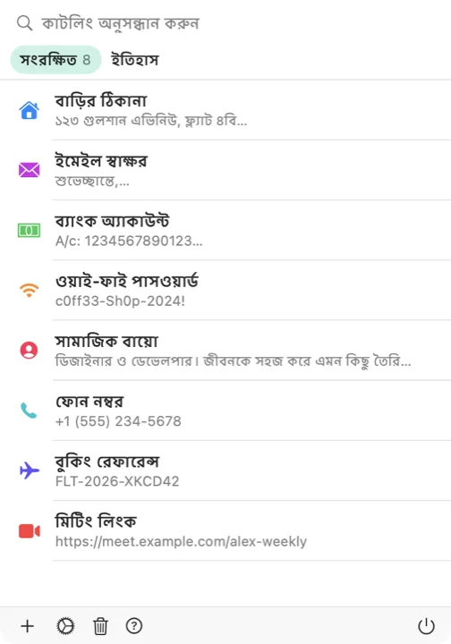

আপনার ক্লিপবোর্ড এখন একটি কীবোর্ড শর্টকাট দূরে। কাটলিং থাকে মেনু বারে, আর হাজির হয় ঠিক যেখানে আপনার কার্সর। কাজের তাল না ভেঙেই সংরক্ষিত যেকোনো লেখা যেকোনো অ্যাপে বসিয়ে দিন।

কাটলিং চুপচাপ মেনু বারে বসে থাকে, Dock-এর বাইরে, আপনার পথ আটকায় না। আইকনে ক্লিক করলেই সংরক্ষিত কাটলিং আর সাম্প্রতিক ক্লিপবোর্ড ইতিহাস চোখের সামনে।
যেকোনো অ্যাপ থেকে শর্টকাটটি চাপলে কার্সরের ঠিক জায়গায় একটি ভাসমান পিকার খুলে যায়। সেটিংস থেকে যেকোনো কী-সমন্বয়ে শর্টকাটটি বদলে নিতে পারেন।
চাইলে কাটলিংকে অনুমতি দিন, যাতে বেছে নেওয়া জিনিসটি সরাসরি আপনার চালু অ্যাপে বসিয়ে দেয়। ডিফল্টভাবে বন্ধ, চালু করার সিদ্ধান্ত সব সময় আপনার।
আপনি যা কিছু কপি করেন, সবই আপনাআপনি ধরা থাকে, কিছুই হারায় না। যেগুলো রেখে দেওয়ার মতো, এক ক্লিকেই সংরক্ষণ করে নিন।
iCloud চালু করলে সংরক্ষিত কাটলিং iPhone, iPad ও Mac-এ একই রকম থাকে। ঐচ্ছিক এবং ব্যক্তিগত।
কোনো অ্যাকাউন্ট নেই, অ্যানালিটিক্স নেই, ট্র্যাকিং নেই। আপনার ক্লিপবোর্ড থাকে আপনার Mac-এ, আর সিঙ্ক চালু করলে আপনার নিজের iCloud-এ।
Mac-এর জন্য কাটলিং নামিয়ে নিন, আর বারবার যা লাগে সব রাখুন একটি শর্টকাট দূরত্বে।